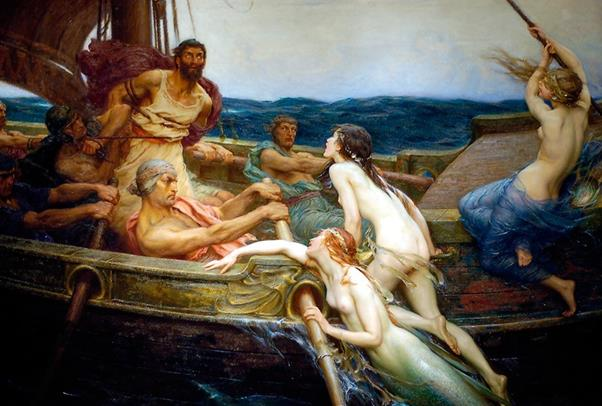

Hoàn thành cuộc hành trình xuống thế giới âm phủ của thần Hadès, Ulysse và đồng đội trở về tòa lâu đài của Circé để cảm ơn và chào từ biệt nàng. Circé ban cho họ lương thực và nước ngọt. Nàng không quên nói riêng cho Ulysse biết những nguy hiểm sẽ gặp phải trong cuộc hành trình cũng như chỉ dẫn cho chàng cặn kẽ cách đối phó.
Con thuyền của Ulysse đi thuận buồm xuôi gió. Chẳng mấy chốc đã tới gần vùng biển của những tiên nữ Sirène là những nàng tiên mà nửa thân người phía trên là một thiếu nữ xinh đẹp còn nửa dưới là chim hoặc là cá, có cánh để bay được trên trời, lại có vây có đuôi để bơi được ở dưới nước. Sirène sống ở một đồng cỏ trên một đảo hoang mà quanh đảo ngổn ngang xương trắng của những thi hài bị thối rữa. Đó là những thủy thủ xấu số đã nghe phải tiếng hát mê hồn của Sirène, bỏ thuyền bỏ lái lao đầu xuống biển cả bơi theo Sirène về hòn đảo, hy vọng tìm được mối tình thắm nồng vĩnh viễn như lời ca đầy quyến rũ của các nàng.
Thuyền của Ulysse sắp đi vào vùng biển của các Sirène. Làm thế nào để thoát khỏi tai họa? Ulysse trước hết nói cho anh em thủy thủ biết rõ mối hiểm nguy, và đây là cách đối phó: chàng sẽ lấy sáp ong gắn chặt vào lỗ tai của anh em thủy thủ, còn bản thân mình thì để anh em thủy thủ trói chặt vào cột buồm. Vì theo lời truyền phán của Circé, dù sao Ulysse cũng không nên bỏ lỡ dịp thưởng thức giọng hát tuyệt diệu của các Sirène. Tuy nhiên, anh em thủy thủ cần nhớ, nếu chàng có vùng vẫy ra lệnh hoặc ra hiệu cởi trói cho chàng thì tuyệt đối không ai được tuân lệnh. Ngược lại càng phải trói chặt chàng vào cột buồm hơn nữa.
Kia là hòn đảo của các Sirène hiện ra. Mặc dù con thuyền đã cố tránh xa hòn đảo nhưng không thoát khỏi con mắt tinh tường của các nàng. Các Sirène thấy con thuyền đi ngang qua hòn đảo liền bơi đến vây lượn quanh con thuyền và cất tiếng hát véo von. Các Sirène ca ngợi chiến công của người anh hùng đã nghĩ ra cái mưu “con ngựa gỗ”, ca ngợi những chiến hữu của chàng. Các nàng ngỏ ý muốn các chàng trai hãy dừng thuyền lại để nghe các nàng hát, và với những giọng hát sâu lắng, ngọt ngào, chứa chan tình cảm, các nàng muốn các chàng trai anh hùng hãy ghé thuyền vào đảo tuyệt diệu của các nàng để nghỉ ngơi và vui chơi hoan lạc... Anh em thủy thủ chẳng ai nghe được tiếng hát của các Sirène. Riêng Ulysse nghe thấy tiếng hát ấy, lòng chàng náo nức, bổi hổi bồi hồi. Chàng vùng vẫy kêu gào ra hiệu cởi trói cho chàng, nhưng vô ích. Hai thủy thủ xông đến quấn thêm mấy vòng dây nữa vào người chàng. Còn mọi người vẫn cúi rạp mình ra sức chèo. Con thuyền lướt sóng đi băng băng. Khi Ulysse không còn nghe thấy tiếng hát của các Sirène vang vọng đến, chàng bèn ra hiệu cho anh em thủy thủ rút sáp ong ở tai ra và cởi trói cho chàng. Thế là con thuyền đi qua vùng biển của những tiên nữ Sirène có sắc đẹp tuyệt trần, có tiếng hát quyến rũ mê hồn, bình yên vô sự.

Các nàng Sirène và con thuyền của Ulysse
Qua vùng biển Sirène chưa được bao lâu thì con thuyền lại phải qua một vùng biển nguy hiểm hơn nữa. Đó là một vùng biển có những ngọn núi đá lởm chởm nằm ngổn ngang trên mặt sóng dữ. Để tránh va phải đá ngầm, con thuyền của Ulysse đi tránh ra xa bờ. Nó phải đi qua một eo biển hẹp. Nơi đây hai bên núi đá có hai con quái vật. Một con tên gọi là Scylla, trú trong một chiếc hang sâu, chuyên rình bắt người để ăn thịt. Một con tên là Charypde hút nước vào lòng biển xoáy thành một vực réo lên ùng ục và đáy biển lộ ra với nền cát xanh thẫm. Để đến khi Charypde phun nước ra thì biển khơi chuyển động dữ dội, nước dâng lên cao ngút, nổi sóng nổi bọt tưởng như biển đang bị đun sôi sùng sục trong một cái chảo đặt trên bếp than hồng. Nước phun lên cao rồi rơi xuống dãy núi hai bên như một trận mưa rào trút nước xuống. Anh em thủy thủ thấy vậy vô cùng sợ hãi, mặt tái xanh như không còn một giọt máu. Ulysse mặc áo giáp đồng tay cầm dao nhọn ra đứng trước mũi thuyền chỉ huy, cổ vũ anh em. Chàng điều khiển anh em lái cho con thuyền đi lánh về phía bên Scylla, tránh được vực xoáy lúc Charypde hút nước rồi lại nhanh chóng thoát khỏi cột nước cao ngút của Charypde phun nước ra, nhưng trong khi mải chú ý đối phó với Charypde thì từ một hang núi đá cao, Scylla thò đôi tay dài nghêu đầy lông lá ra tóm bắt ngay sáu thủy thủ ở giữa lòng thuyền. Sáu anh em bất hạnh đó kêu thét lên, giãy giụa, chới với trên không giống như một con cá mắc câu bị người đi câu giật cần kéo cá lên khỏi mặt nước. Scylla đã ăn thịt họ ngay trước cửa hang. Ulysse trông thấy cảnh tượng đau lòng ấy mà không sao cứu vãn được. Đó là một trong những kỷ niệm xót xa của chàng trong quãng ngày lênh đênh tiên biển cả tìm đường về quê hương.
Thoát khỏi tai họa của vùng biển đá ngầm với Charypde và Scylla, con thuyền của Ulysse đi đến hòn đảo của thần Mặt trời-Hélios nơi có những con bò có vầng trán rộng, to béo khác thường cùng với đàn dê, cừu đông đúc. Từ xưa mọi người đã trông thấy chúng, nghe thấy tiếng chúng kêu rống om xòm. Ulysse nhớ lại lời căn dặn của tiên nữ Circé và nhà tiên tri mù Tirésias, chàng nói với anh em thủy thủ:
- Hỡi anh em! Nàng Circé xinh đẹp có những búp tóe quăn vàng và nhà tiên tri danh tiếng Tirésias đã căn dặn ta, phải tránh hòn đảo của thần Hélios, nếu không sẽ gặp phải một tai họa khủng khiếp. Vậy xin anh em hãy cho thuyền lánh xa đảo.
Nhưng anh em thủy thủ chẳng nghe theo lời khuyên bảo của Ulysse. Họ viện cớ trải qua bao nỗi hiểm nguy, sức lực của bọ đã kiệt quệ rồi. Giờ đây là lúc cần phải để cho mọi người lên bờ nấu ăn bữa chiều, nghỉ ngơi để lấy lại sức. Đói và mệt không thể đi suốt đêm được. Nhỡ giữa đường trái gió trở trời thì sức đâu ra mà chống đỡ, Ulysse đành phải tuân theo ý muốn của mọi người song chàng không quên căn dặn họ một điều tối ư quan trọng.
- Hỡi anh em! Anh em đã muốn thế, ta chẳng thể một mình chống lại ý muốn của anh em. Song ta muốn anh em phải hứa với ta bằng một lời thề nguyền thiêng liêng: không một ai được đụng đến một con bò hay một con bê, con cừu trên đảo. Anh em hãy bằng lòng với nguồn thức ăn dự trữ mà nàng Circé bất tử đã ban cho chúng ta.
Nghe lời Ulysse, anh em thủy thủ thề hứa tuân theo lời căn dặn của Ulysse.
Nhưng gần sáng, thần Zeus dồn mây mù khơi lên một cơn bão lớn. Con thuyền không nhổ neo được. Rồi ngày hôm sau, hôm sau, hôm sau nữa cứ thế kéo dài cho đến trọn một tháng thời tiết chẳng thuận lợi chút nào. Buổi sớm thì nắng ủng mưa dai. Buổi chiều thì gió chướng biển động. Lương thực dự trữ hết dần. Anh em thủy thủ phải săn chim, bắt cá để sống cho qua ngày. Cái đói hành hạ mọi người khiến Ulysse vô cùng lo lắng. Chàng bèn đi sâu vào trong đảo, tìm một nơi khuất gió, sạch sẽ, cao ráo, quỳ xuống hướng mặt lên bầu trời cao xanh mà cầu khấn các vị thần Olympe. Chàng cầu xin các vị thần chỉ dẫn cho đường về, giúp chàng và anh em thoát khỏi tình cảnh nguy khốn. Các vị thần từ chốn cao xa nghe thấy hết lời thỉnh nguyện của chàng. Các thần giáng xuống đôi mắt của chàng một cơn buồn ngủ nặng trĩu, và thế là Ulysse ngủ thiếp đi.
Trong khi chàng ngủ say, anh em thủy thủ bị cơn đói giày vò không còn nghị lực và sự tỉnh táo để chế ngự, đã bảo nhau bắt những con bò có vầng trán rộng của thần Hélios giết thịt, nấu ăn. Đến khi Ulysse tỉnh ngủ trở về bờ biển nơi con thuyền neo đậu thì việc đã xảy ra rồi không còn cách gì cứu vãn được. Chàng chỉ con biết quỳ xuống giơ hai tay lên trời than vãn cho nỗi bất hạnh của mình và cầu xin các vị thần Olympe tha thứ.
Nữ thần Lampétie trùm khăn dài tha thướt, con gái của thần Hélios, được giao trách nhiệm cai quản đàn bò, liền bay ngay lên thiên đình tâu cho cha biết cái hành động phạm thượng vô đạo của lũ thủy thủ. Thần Hélios bèn đùng đùng bổ tới ngay cuộc họp của các vị thần. Ngay giữa lúc mọi chư vị thần linh đang họp bàn nhiều công việc trọng đại, thần Hélios cất tiếng nói ầm vang, khiếu nại:
- Hỡi Zeus đấng phụ vương và các chư vị thần linh bất tử! Xin các vị hãy trừng phạt ngay lũ thủy thủ của Ulysse vì tội chúng đã giết bò của ta. Chúng đã hỗn hào láo xược xúc phạm đến báu vật của ta, một hành động phạm thượng không thể nào tha thứ được. Nếu chúng không bị trừng trị vì tội này thử hỏi trật tự kỷ cương của thế giới Olympe còn ra cái gì nữa. Ta sẽ từ bỏ thế giới dương gian này, xuống sống ở thế giới âm phủ của thần Hadès và dùng ánh sáng của mình phục vụ cho những vong hồn. Ta không thể nào làm việc ở cái thế giới hỗn loạn như thế này được.
Nghe Hélios nói vậy, thần Zeus dồn mây mù bèn lên tiếng ngay:
- Hỡi Hélios, vị thần Mặt trời nóng rực! Xin hãy bình tâm! Thần cứ tiếp tục dùng ánh sáng của mình phục vụ cho các vị thần bất tử của ngọn núi Olympe và phục vụ cho lũ người trần đoản mệnh sống trên mặt đất sản sinh ra lúa mì. Còn với lũ người phạm thượng kia, ta sẽ giáng sét chói lòa đánh tan con thuyền chạy nhanh của chúng ra từng mảnh vụn giữa biển khơi.
Thần Hélios ra về yên lòng chờ đợi.
Sáu ngày đã trôi qua kể từ buổi anh em thủy thủ giết con bò tiên của thần Hélios cũng có nghĩa là sáu lần thần Hélios đánh cỗ xe vàng chói lọi của mình từ tòa lâu đài ở phương Đông sang Đại dương ở miền cực tây. Trong sáu ngày ấy, anh em thủy thủ ăn uống thỏa thuê. Họ chẳng bị cơn đói giày vò nữa, nhưng họ cũng chẳng còn đủ sáng suốt tinh tường để nhận ra những điềm gở mà các vị thần của chốn Olympe tiên báo: da bò biết đi, những xiên thịt nướng trên bếp than hồng khi thì khóc than rên rỉ, khi thì kêu rống lên. Cả những tảng thịt sống cũng kêu gào, vật vã.
Đến ngày thứ bảy thần Zeus ra lệnh cho mưa ngừng gió lặng. Biển khơi trở nên hiền hòa. Trời xanh cao lồng lộng, bát ngát. Mây trắng tung tăng bay lượn. Thế là mọi người reo hò mừng rỡ. Họ bảo nhau đẩy con thuyền xuống biển, dựng cột căng buồm. Thuyền ra khơi chạy băng băng, băng băng, nhưng hỡi ôi, chẳng được bao lâu! Thần Zeus dồn mây mù, phủ một đám mây đen sẫm sũng nước lên con thuyền. Biển tối sầm lại. Bão nổi. Gió thổi điên cuồng. Con thuyền của Ulysse vật vã trong sóng gió. Cột buồm bị gió vặn gãy đổ xuống làm vỡ sọ một thủy thủ. Tiếp ngay sau đó, một tiếng nổ kinh thiên động địa. Thần Zeus giáng sét chói lòa xuống trúng giữa con thuyền. Con thuyền quay lông lốc, bốc khói mù mịt khét lẹt rã rời ra từng mảnh. Anh em thủy thủ lao mình xuống biển, bơi lóp ngóp, bị sóng cuốn đi mỗi người mỗi nơi mỗi ngả. Thần Zeus đã không cho họ tiếp tục cuộc hành trình trở về quê hương.
Ulysse bơi trên mặt biển, May thay, chàng bám được vào chiếc cột buồm. Chàng bơi lại ghép chiếc cột buồm này vào với một cây xà ở liền ngay đấy làm thành một chiếc bè rồi ngồi lên trên đó, và trên chiếc bè đơn sơ ấy chàng trôi nổi bập bềnh cho tới sáng hôm sau. Thật khủng khiếp vô ngần khi Ulysse thấy mình bị trôi về đúng giữa eo biển Charypde và Scylla. Lúc này Charypde đang hút nước biển vào. Nước bắt đầu xoáy thành vực sâu hun hút. Ulysse nhìn thấy trên đầu mình ở vách núi nhô ra có một cành vả. Chàng bám vào đó lủng lẳng như một con dơi treo mình trên cành cây. Chàng không thể di chuyển đến một chỗ khác, và cứ lủng lẳng như thể để chờ đợi. Chàng chờ đợi, kiên nhẫn chờ đợi,
Charypde hút nước xong lại nhả nước ra. Đúng lúc chiếc bè gỗ từ miệng Charypde nhả ra nổi bềnh lên mặt sóng, Ulysse buông tay khỏi cành cây cho người rơi xuống nước, chàng lại ngoi lên ngay. Chàng trèo lên chiếc bè. Thế là chàng thoát chết. Sóng gió của đại dương lại tiếp tục đưa chàng đi. Suốt chín ngày trời phó mặc số mệnh của mình cho biển khơi bao la với sóng gió hung dữ, cuối cùng chàng trôi dạt đến hòn đảo Ogygie của tiên nữ Calypso, một nàng tiên có sắc đẹp tuyệt trần, bất tử và nói được tiếng người.